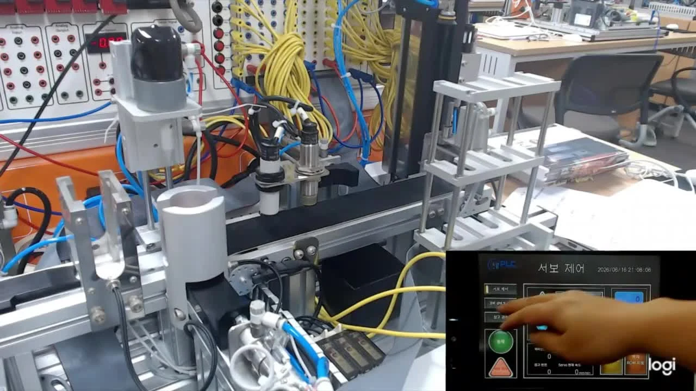
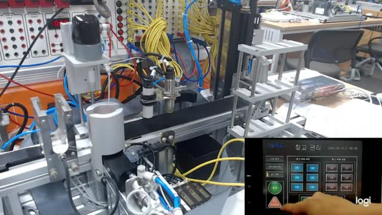
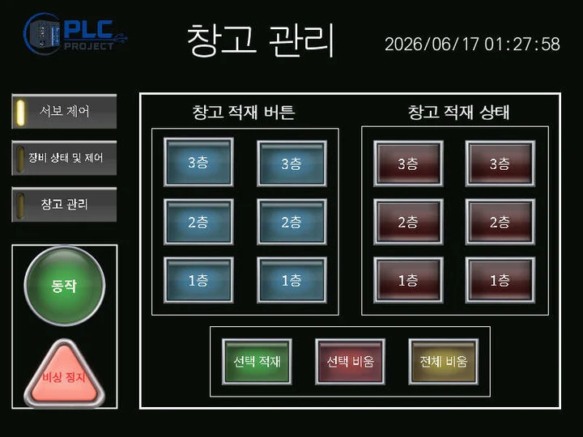
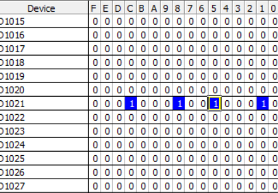
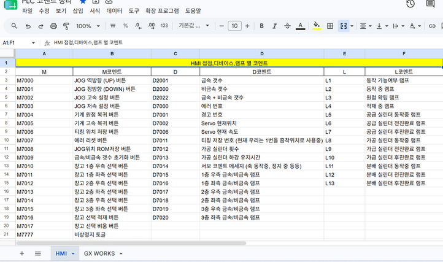
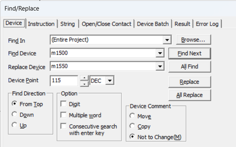

소재별 위치를 기억하는 자동 적재·출고
금속·비금속을 분류하고 저장 위치와 수량에 따라 출고하는 PLC 자동화 공정입니다.


전체 시스템
소재를 공급·가공한 뒤 금속과 비금속을 판별하고 1층부터 순서대로 적재합니다. 같은 소재가 3개 모이면 저장된 위치를 바탕으로 배출 시퀀스를 수행합니다.
장치와 개발 환경
Q3UDV CPU, QX40/QY10 입출력 모듈, QD77MS2 위치결정 모듈과 MR-J4-10B 서보 앰프를 사용했습니다. GX Works2에서 Ladder를, GT Designer3에서 HMI를 구성한 팀 프로젝트입니다.
소개 범위
발표 자료의 시스템 기능과 코드 병합 과정에서의 협업 경험을 중심으로 정리했습니다. 소재별 위치 관리와 HMI 연동, 공유 메모리 주소 조율을 주요 경험으로 정리했습니다.
위치 비트와 HMI로 공정 상태를 확인
소재 정보와 저장 위치를 비트로 관리하고, 화면에서 적재·서보 동작을 조작하는 구성입니다.


소재·위치 저장
소재 종류와 층·좌우 위치를 비트 단위로 저장합니다. 적은 메모리로 상태를 구분할 수 있지만 비트 번호가 헷갈리고 확장성이 제한되는 특성도 발표에서 정리했습니다.
HMI 조작
JOG와 속도 변경, 원점·고속 복귀, 티칭값 ROM 저장, 오류 리셋을 화면에서 다룹니다. 장비·실린더 상태와 작업 수량, 창고 적재 상태를 함께 표시합니다.
팀 작업 연결
선택 적재에서는 지정된 위치와 빈 공간을 확인해 순서를 정합니다. 이 기능들이 공유하는 디바이스 주소를 팀 코드와 맞추는 과정이 협업의 핵심이었습니다.
코드 병합 시 디바이스 주소 충돌 해결
개별 시퀀스가 사용하는 메모리 주소를 공유해 중복과 의존성을 확인했습니다.


문제 · 데이터 중복과 종속성
팀원이 작성한 코드를 병합할 때 같은 주소를 다른 의미로 사용하면서 데이터가 겹쳤습니다. SET/RESET이 다른 시퀀스의 상태에 영향을 줄 수 있었습니다.
조치 · 메모리 맵 공유
스프레드시트로 디바이스 주소와 용도를 정리하고 팀이 같은 기준을 보도록 했습니다. 주소를 변경할 때는 Find/Replace로 참조를 함께 확인했습니다.
확인 · SET/RESET 관계
비트 상태를 누가 설정하고 언제 해제하는지 함께 점검했습니다. 단순 주소 변경뿐 아니라 시퀀스 간 의존성을 확인하는 협업 방식으로 정리했습니다.